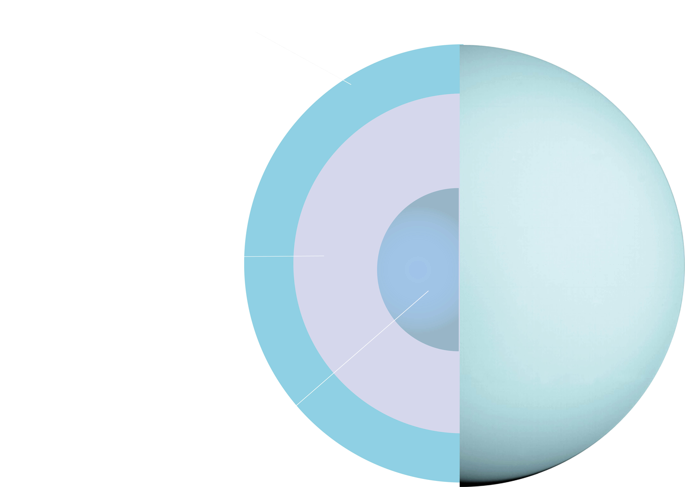
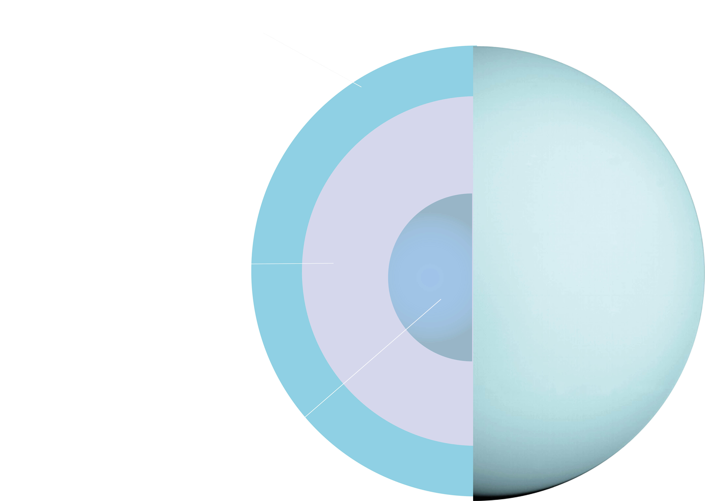

What would it be to live on a different planet?
URANUS


 

| EQUATORIAL DIAMETER | 51 118 km |
|---|---|
| ROTATION PERIOD | 17h 14min |
| SOLAR ORBIT PERIOD | 84 years |
| SURFACE TEMPERATURE | -210 C |
| DIST. FROM SUN | 2870 M km |
| SURFACE GRAVITY | 8.7 m/s |
Uranus, not really an inhabitable place, but it's moons could be a bit less hostile. Scientists are targeting 2 major moons from its 27 known moons. Its Titania and Miranda.
Both moons are susceptible to radiation coming straight from Uranus, so life wouldn’t be the best there. If radiation isn’t enough then maybe the cold approx. – 200 degrees Celsius, massive quakes and cryovolcanoes is a reason enough to think twice before trying to live there.
As hostile as it is, it would be a great interest to explore Titania’s massive craters that goes 500 km in diameter and canyons that makes our Great canyon look tiny.
Miranda looks very different from other planets, as it seems like made from jigsaw puzzle, but wrongly put together. It also has deep canyons and low gravity. If you would throw a stone down it's canyon, it would land only after 10 minutes, so if you are fast enough, you could catch it.
Sightseeing would be quite a view, even Sun would look different. If you would look at the sun through a filter, it would look like a thin disc, not a huge ball of light.